Appendices — The map behind the story
The original storybook's map, extended the way the year extended the Wall: same table, two new columns; same anchors, one new scene; same diagrams, plus the three the architect drew over them — and two appendices the first edition couldn't have written, because the binder was still empty.
Appendix A — Chapter ↔ roadmap ↔ kill-shot
The book covers the full roadmap.sh/spring-boot node tree (the same eleven topics tracked in PROGRESS.md) plus the senior extensions — and, in this edition, the architect layer above each: the -ility the chapter's decision serves and the ADR that recorded it. Use this table to jump from a weak topic to its chapter — or from a chapter to the reference material.
| Ch | Title | Roadmap topic | B.E.A.N.S. | Kill-shot | Architect layer | Playbook | examples/ |
|---|---|---|---|---|---|---|---|
| 1 | The Review | Prerequisites: clean code, why Spring exists | B | — | evolvability · ADR-001 seams | Ch.1 | ch01_core/ |
| 2 | The Container | 1 — Spring Core (IoC, DI, scopes, lifecycle) | B | #2, #3 | enforcement · ADR-002 fitness functions | Ch.1 | ch01_core/ |
| 3 | Smoke and Mirrors | 1 — Spring Core (AOP, proxies) | B | #1 | maintainability · ADR-003 proxy discipline | Ch.1 | ch01_core/ |
| 4 | The Magic Show | 3 + 4 — Starters & Autoconfiguration | B | #6 | supply-chain evolvability · ADR-004 | Ch.3–4 | ch04_autoconfig/, ch03_starters/ |
| 5 | The Front Door | 10 — Spring MVC | E | #4 | contract integrity · ADR-005 governance | Ch.10 | ch10_mvc/ |
| 6 | The Pool | 6 — Embedded Server | E | #10 (thread model) | availability · ADR-006 latency budgets | Ch.6 | ch06_server/ |
| 7 | The Thousand Queries | 7 — Hibernate (persistence context, N+1, lazy) | A | #5 | designed performance · ADR-007 fetch policy | Ch.7 | ch07_jpa/ |
| 8 | The Silent Commit | 7 — Hibernate (transactions, locking) | A | #7 | integrity · ADR-008 consistency model | Ch.7 | ch07_jpa/ |
| 9 | The Proxy You Didn't Write | 8 — Spring Data (JPA/JDBC/Mongo) | A | — | data evolvability · ADR-009 aggregates | Ch.8 | ch08_data/ |
| 10 | The Breach That Wasn't | 2 — Spring Security | N | #9 | security · ADR-010 fail-closed zones | Ch.2 | ch02_security/ |
| 11 | Forty Minutes | 11 — Testing | N | #8 | evolvability · ADR-011 test architecture | Ch.11 | ch11_testing/ |
| 12 | Three A.M. | 5 — Actuators / observability | N | — | operability · ADR-012 SLOs, probes | Ch.5 | ch05_actuator/ |
| 13 | The Cascade | ext — Resilience, caching, async | N | #1 reprise | availability · ADR-013 composition | Ch.12 | ch12_extensions/, ch09_microservices/ |
| 14 | The Split | 9 — Microservices & Spring Cloud | S | — | evolvability · ADR-014 seam gates | Ch.9 | ch09_microservices/ |
| 15 | Faster | ext — Performance & modern runtime | S | #10 | cost · ADR-015 reversible runtime | Ch.12 | ch12_extensions/, ch06_server/ |
| 16 | The Architect's Chair | ext — System design (the final gate) | S | final gate | judgment · ADR-016 the sequence | Ch.12 + trail | all |
| 17 | The Hostile Review | capstone — synthesis (every node, attacked) | all | all ten, hostile | defensibility · all ADRs | the whole trail | — (App. F–G) |
Kill-shot numbers refer to CLAUDE.md §4; "Playbook Ch.X" is a legacy cross-reference to a companion reference book not included here; the examples/ column gives each chapter's drill directory — commented .java files, the drill artifacts this edition's pointers use throughout. The Architect layer column is Appendix F in shorthand: the -ility bought, and the record that priced it.
Light-touch roadmap leaves live inside chapters rather than owning one: JSP → Ch.5 (the ViewResolver "road not taken"); Eureka vs platform DNS → Ch.14 (evaluated and declined, with mechanism); Spring Data JDBC & MongoDB → Ch.9 (same grammar, three engines); OAuth2 roles & flows → Ch.10 (authorization server vs resource server). What's missing on purpose: Appendix H.
Appendix B — The story-anchor index (one image per chapter — recall the scene, re-derive the mechanism, then name the -ility it threatened)
| The scene | The mechanism | The -ility threatened | Ch |
|---|---|---|---|
| 47 green-ink comments on a working feature | "works" is not "done" — the senior bar | evolvability | 1 |
| One user's draft report inside another's session | beans are singletons by default; stateless or scoped, never stateful | security · scalability | 2 |
"this. goes around the mirror" on the Wall |
self-invocation bypasses the AOP proxy — @Transactional silently inert |
integrity | 3 |
| The health bean that vanished after a version bump | @ConditionalOnClass backing off, silently, by design |
operability | 4 |
| "Your front door leaks your floor plan" — @sable | errors that bypass @ControllerAdvice; ProblemDetail as the contract |
security | 5 |
| Full thread pool, idle CPUs, site down | thread-per-request: one slow downstream exhausts everything | availability | 6 |
| The 28-second dashboard — 401 flawless queries | N+1; the persistence context stops being invisible | performance | 7 |
| The triage that failed and half-saved | caught checked exception = no rollback signal; unchecked-only default | integrity | 8 |
| "Where is the implementation of our repository interface?" | Spring Data generates the proxy at runtime — names are queries | integrity | 9 |
| A valid critical filed against the security platform itself | authorization lives in the filter chain, not in hope | security | 10 |
| Forty minutes of CI nobody trusts | context caching: every distinct config — including the bean-override set (@MockitoBean) — is a new context |
evolvability · cost | 11 |
| Kubernetes restart-looping healthy pods | dependency checks belong in readiness, never liveness | availability · operability | 12 |
| The cache-hit panel flat at zero | the proxy trap generalizes: @Cacheable/@Async share @Transactional's mechanism |
availability | 13 |
| "Microservices by Q3" argued from both sides | no cross-service transactions — sagas, outbox, idempotency | integrity · operability | 14 |
| The carrier thread pinned under load | virtual threads unmount on blocking I/O — except inside synchronized (Java 21) |
performance · cost | 15 |
| The green pen on Maya's desk | the architect's job: mechanism, trade-off, and the next engineer | judgment | 16 |
| The ADR binder on the due-diligence table | architecture as a body of evidence | defensibility | 17 |
Appendix C — The five debug drills (Ch.16 — symptom → first mechanism to check)
| Symptom | Reason from the mechanism | Story |
|---|---|---|
Intermittent LazyInitializationException |
which code path touches a lazy association after its session closed? | Ch.7 |
| Transaction not rolling back | checked exception? caught exception? self-invocation? — the proxy never saw a rollback signal | Ch.3, 8 |
| Endpoint slow under load | pool exhaustion math first: worker threads × downstream latency × missing timeouts; then N+1 | Ch.6, 7 |
| Bean not created | --debug → ConditionEvaluationReport: which condition backed off, and why? |
Ch.4 |
| 401 on a route that should be open | walk the filter chain in order — what matched before your permit rule? | Ch.10 |
Appendix D — Suggested cadence
- With the Playbook (steady): read each chapter the evening before you work its Playbook chapter and
examples/drills — the incident primes the mechanisms (the Appendix A table maps Ch → both). - Interview cram: story pass in 3–4 sittings, then debrief-only pass, then drill the anchor index (§B) until every scene surfaces its mechanism unprompted — then the decision layer the same way: the fork index (§D.1) and the flashcards (§G) with their answer columns covered, and one pass through the ADR trail (§F), reciting each record as decision + -ility + priced cost before checking the row.
- The decision pass (this edition): replay only the ⚖ Your move, architect forks, indexed below — commit to an option, out loud, before re-reading the reveals; the commitment is the rep, the reveal is just the grading.
- Spaced repetition: the anchors feed
@coach's cards — review at 1d → 3d → 7d → 16d → 35d, per CLAUDE.md §7.
D.1 — The decision pass, indexed (⚖ forks → verdicts)
The year's seventeen forks on one page, so the replay doesn't require the page-hunt. It doubles as a self-test: cover the last two columns, argue the losing options at full strength, commit — then uncover and grade. The ADR column is where to appeal the verdict.
| Ch | The fork | A / B / C | ADR | Chose | -ility traded |
|---|---|---|---|---|---|
| 1 | Structure the rest of reporting? | layers / feature seams / extract a service | 001 | B | evolvability |
| 2 | Stop the next violation? | review vigilance / module walls / fitness functions | 002 | C | enforceability |
| 3 | Transaction strategy codebase-wide? | declarative + discipline / TransactionTemplate / AspectJ |
003 | A | operability |
| 4 | Config strategy after the vanished bean? | ad-hoc @Value + wiki / typed governance / Config Server |
004 | B | interrogability |
| 5 | Where does the API version live? | path / header / query param | 005 | A | debuggability — one-way door |
| 6 | Capacity, mid-incident? | more threads + pods / queue-and-async / timeouts + bulkhead | 006 | C | availability |
| 7 | OSIV: on / off now / off behind a window? | on / big-bang / staged | 007 | C | availability |
| 8 | Stop the silent overwrite? | @Version → 409 / FOR UPDATE / SERIALIZABLE |
008 | A | integrity — one-way door |
| 9 | Dashboards across aggregates? | projection per view / clever fetching / CQRS | 009 | A | evolvability |
| 10 | Token revocation posture? | short TTL / denylist / introspection | 010 | A | statelessness — overturned at the hostile review (ADR-017) |
| 11 | Land the test standard? | big-bang sprint / ratchet / contracts first | 011 | B | evolvability · cost |
| 12 | What pages a human at 3 a.m.? | causes / SLO burn only / nothing | 012 | B | operability |
| 13 | The detail page when the vendor goes dark? | fail fast / queue-and-drain / STALE + age |
013 | C | availability |
| 14 | Split the monolith? | no split / Notifications only / domain-wide by Q3 | 014 | B | evolvability |
| 15 | Runtime: autoscale / vthreads / WebFlux? | scale out / virtual threads / reactive | 015 | B | cost · performance |
| 16 | Where does similarity scoring run? | inline on submit / async advisory / nightly batch | 016 | B | availability |
| 17 | Remediation priority? | revocation / drill / sequence both | 017 | C | judgment |
| 17 | Castellan's "just a feed" — name the door first | internal schema as-is / versioned external contract / batch export | — | B | the exam: schema one-way, transport two-way — misclassification is the trap |
Score-keeping for the pattern-matchers: the balanced option wins often, not always — and Ch.10's winning call was reopened in Ch.17. Do the analysis. Two forks are labeled one-way doors (Ch.5, Ch.8); the capstone hides a third, unlabeled — there, you classify before you choose, and the grade is on the classification.
Appendix E — The Wall, rendered (extended)
The five drawings the whole book makes on whiteboards, as actual diagrams — the original two, plus the three the architect layered over them.
The Request Journey — born in Ch.5; every senior gotcha is a stop on this line:

The bean lifecycle — Ch.2, with the point where the proxy is born (Ch.3):

The consistency spectrum — Ch.8's long horizontal line under the isolation ladder, the Wall's most-recycled drawing (Ch.14 prices the "money" end with the outbox; Ch.16's design review recites it whole):
Consistency priced per write — every step rightward buys throughput and sells simultaneity (ADR-008).
The context map — chalked as three aggregate boxes in June (Ch.9), named and bordered in October (Ch.14): Atrium's bounded contexts, and the one seam that was real enough to cut:

The resilience composition — Ch.13's ordering argument, drawn so it had a picture to lose to:

Why this nesting (ADR-013): every retry attempt crosses the breaker and is counted, so an open breaker ends the storm instead of feeding it; the bulkhead takes a permit per attempt, so the cap holds mid-storm; the timeout prices one attempt's worst case. Flip retry inside the breaker and three attempts look like one call — same annotations, opposite system. Ordering is semantics, not style.
Appendix F — The ADR trail
The binder, end to end — sixteen decisions minted across the year, plus the two candidates the hostile review opened. Each line is the half-page record compressed to its spine: what was decided, which -ility it bought, and the cost accepted in writing. Decisions you can't show a record for are decisions you'll re-litigate forever.
| # | Title | Ch | The decision, in one line | Serves | The priced cost |
|---|---|---|---|---|---|
| ADR-001 | Feature seams in the Atrium monolith | 1 | Package by feature with package-private internals; constructors into final fields; records — never entities — at the boundary; domain depends on ports |
evolvability (testability its leading indicator) | more boundary types and mapping code; arguments with the code that predates the rule |
| ADR-002 | Executable architecture (fitness functions) | 2 | The constitution becomes a test suite — ArchUnit rules fail the build on field injection, mutable singleton state, crossed dependencies, entities from controllers; eager singleton startup never traded away | evolvability that survives turnover | rule maintenance, documented escape hatches, arguing with a robot |
| ADR-003 | Declarative cross-cutting, with eyes open | 3 | Keep annotation-driven transactions/caching/security, but any annotated method invoked via this. is a review finding; transaction boundaries live on service entry points only |
maintainability of invisible control flow | a checklist line that costs review attention forever — paid knowingly, because the alternative was paid in silence |
| ADR-004 | Config governance | 4 | Typed @Validated @ConfigurationProperties only; profiles overlay, never fork; every version rides the BOM or gets a named owner; a startup smoke test asserts critical beans exist |
supply-chain evolvability · operability | the BOM constrains upgrade freedom in exchange for a tested matrix; config becomes a schema, validated at boot |
| ADR-005 | API contract governance | 5 | RFC 9457 ProblemDetail is the only public error shape; records, @Valid at binding; deliberate versioning with a published sunset process |
contract integrity (interoperability + evolvability), and the security of the error surface | every new endpoint owes a version decision it never used to owe |
| ADR-006 | The latency budget | 6 | Every outbound call carries an explicit timeout derived from a per-endpoint budget; budgets sum along the Request Journey; no unbounded waits anywhere | availability | degraded modes become explicit product negotiations — every new dependency starts with a budget argument |
| ADR-007 | The fetch policy | 7 | All associations lazy; every read path declares its fetch plan (DTO projection by default, JOIN FETCH/@EntityGraph where needed); OSIV off; hot paths assert SQL statement counts in CI |
performance as a designed property | a projection type per view, and a quarter of archaeology turning hidden N+1s into visible plans |
| ADR-008 | The consistency model | 8 | Service boundaries declare rollbackFor = Exception.class; @Version optimistic locking is the default with a named retry-or-surface policy; pessimistic only for short, hot, machine-paced contention; audit writes ride REQUIRES_NEW |
consistency/integrity, priced against throughput | conflict UX, and the discipline that isolation levels are named — never defaulted — in review |
| ADR-009 | Aggregate boundaries | 9 | Repositories per aggregate root; cross-aggregate reads via projections and read models; references by ID; migrations append-only; the pool sized by arithmetic, recorded | data-model evolvability · integrity (the transaction's natural boundary) | convenient cross-aggregate JOINs stop being free and become deliberate read-model decisions |
| ADR-010 | Security architecture | 10 | Stateless OAuth2 resource server; the chain ends in anyRequest().denyAll(); method security as defense in depth; CSRF off for the token API on the record; named CORS allow-list; short tokens, refresh rotation |
security as fail-closed structure | an explicit rule for every new route — and a leaked token valid until expiry, accepted in writing (reopened in Ch.17) |
| ADR-011 | Test architecture | 11 | Test at the narrowest slice that exercises the behavior; shared test configs converge context fingerprints under a CI cache-hit budget; Testcontainers Postgres for anything SQL-shaped; a handful of full journeys | evolvability, via the suite that makes change cheap | slice literacy — knowing what each slice loads and pointedly does not — as a team skill |
| ADR-012 | Observability by design | 12 | Liveness is process-only, dependencies live in readiness; every user-facing flow carries a signed SLO with golden signals and business metrics; correlation IDs end to end; a named cardinality budget; page on symptoms, dashboard the causes | operability | a metrics review joins every feature's definition of done — designed in, or the feature isn't done |
| ADR-013 | Resilience composition | 13 | The order is law — timeouts under everything; bounded, jittered retry only on idempotent calls, every attempt crossing the breaker; a bulkhead per dependency; idempotency keys; fallbacks degrade honestly; bounded, named executors | availability under dependency failure | configuration that must be load-tested, not guessed — and a review rule: a bare retry loop is a finding |
| ADR-014 | The split decision | 14 | Atrium stays a modular monolith; Notifications extracts by strangler fig behind the gateway — outbox, idempotent consumers, an ACL, platform DNS; future cuts clear three gates (no shared transaction, own scaling profile, staffable on-call) | evolvability now, organizational scalability someday | one seam pays distribution's full tax — contracts, partial failure, tracing, a second pager |
| ADR-015 | Runtime selection | 15 | Virtual threads on Atrium after a load-tested bake-off and pinning audit; WebFlux declined with its genuine case named; native image for Notifications only; re-evaluation triggers written down | cost, promoted to first class (with performance per pod) | the pinning audit as a standing review item at every JDK upgrade; native's build/closed-world tax confined to one service |
| ADR-016 | Duplicate-report detection (the design review's output) | 16 | Similarity scoring runs as an async outbox-fed pipeline, never a synchronous gate; suggestions are advisory and only a human merges; the scorer is a port inside the Triage context | integrity of the merge · submit-path availability | suggestions are eventual — seconds, not instant — accepted by product on the record |
| ADR-017 | Revocation: jti denylist in the bearer filter (candidate — opened at the hostile review) |
17 | Every token's unique ID is checked against a shared denylist in the filter; entries expire with their token's TTL; fail closed | security — revocation in seconds, not TTLs | one lookup per request; the denylist joins the availability budget; a slice of statelessness sold back |
| ADR-017 | Run the brownout drill (candidate — opened at the hostile review) | 17 | The shedding tiers become a quarterly gameday, first run within 30 days — untested designs are hypotheses | operability — a rehearsed degradation instead of a believed one | two afternoons a quarter, cheaper than discovering rotten flags at 3 a.m. |
Both candidates merged the same week into tab seventeen — ADR-017, Findings of the June architecture audit — owners and dates attached (the denylist: Priya, 90 days; the drill: Idris, 30). The trail's first entry written in front of outsiders, and the one the audit priced highest: proof the architecture has a mechanism for being wrong.
Appendix G — The Architect's Principles & flashcards
The Architect's Principles
Nineteen sentences the year wrote in green. Each one is a scene first — recall the scene, and the principle argues itself.
- "Works" is not "done" — senior code is judged by how it survives, not whether it runs — the 47 green-ink comments on a feature that ran flawlessly in the demo (Ch.1).
- Every boundary you respect is an option you still own, and the seam — not the conference — decides when to exercise it — evolvability is the option ledger — the January seams the November split ran along (Ch.1/14).
- Testability is evolvability's leading indicator — a class you can't construct in a unit test is architecture you can't change cheaply —
new ReportDigestService()with nothing to pass (Ch.1). - An architecture you don't enforce is a rumor — review vigilance decays and fitness functions don't — the red CI build naming its own law, a fortnight after its author broke it (Ch.2).
- No annotation is magic: the advice lives in the proxy, and
this.walks around it — show me the mechanism, or the mechanism will show you — the half-saved triage states (Ch.3). - A bean nobody can explain is a bean nobody owns — config is a schema, and absence is a failure class with a test — eight engineers silent at standup over a vanished health bean (Ch.4).
- Every error a user sees is a designed response or a security leak — the error surface is part of the contract — @sable's 500 with the JDBC URL in it (Ch.5).
- Availability is arithmetic before it is architecture — pool ÷ residence time is the ceiling, and residence belongs to your slowest dependency — the napkin: 7/s × 30 s > 200 threads (Ch.6).
- Performance is a designed property, declared in the query and asserted in CI — never a patch — the 28-second dashboard's 401 individually flawless statements (Ch.7).
- Lean on the framework where the default's -ility bill is one you'd pay anyway; fight it only on the record, mechanism in hand — OSIV switched off with a tab in the binder, the fought default as strongest exhibit (Ch.7/17).
- Choose the error you can see over the corruption you can't — integrity means picking your consistency model on purpose — the 409 Priya defended to the auditors (Ch.8/17).
- The aggregate is the unit of consistency and of change — invariants inside one transaction, IDs across the line — three chalk boxes that grew into the context map (Ch.9/14).
- Fail closed is a structural property, not a vigilance program — security lives where forgetting is safe —
anyRequest().denyAll()and the route that drifted (Ch.10). - The test suite is the system's second architecture — the one that makes changing the first cheap — evolvability's enabler — forty distrusted minutes becoming trusted ones (Ch.11).
- Observability is designed at feature time: what will 3 a.m. ask, and is the answer already recorded? — operability — the page that arrived with zero data (Ch.12).
- Backpressure is a system property, not a queue setting, and a fallback that lies is an incident you've scheduled for later — availability is refusing the load you can't survive, honestly — the smoke cloud and the pending badge (Ch.13).
- Bet settings, not codebases — reversibility is the -ility that keeps every other bet survivable, and cost is priced in dollars, risk, and team — virtual threads as a property flip, reactive as a one-way door (Ch.15).
- A defensible architecture is a body of evidence with a working appeals process — written for the next engineer, not the next meeting — defensibility, the meta--ility: sixteen tabs on the due-diligence table, two concessions drying in green, the pen changing desks (Ch.16/17).
- Know which door you're in — two-way doors reward optionality; one-way doors (the public contract, the consistency model) reward decisive commitment — deferring those means deciding later under worse information — the version-from-day-one reveal (Ch.5) and the conflict contract (Ch.8).
The flashcard index
Cover the right two columns. The scene is the cue; the question is what an interviewer will actually ask; the answer is the one breath an architect gets before the follow-up.
| The scene | The interviewer asks | The architect's line |
|---|---|---|
| The 47 green-ink comments on an applauded demo (Ch.1) | Why constructor injection — isn't field injection less ceremony? | Field injection births the object invalid and installs its organs by reflection (AutowiredAnnotationBeanPostProcessor); constructors make it born complete, final, testable with plain new — the ugly five-arg constructor is the SRP alarm working. |
The circled, dated List<Report> return type (Ch.1) |
Why DTOs at the API boundary? | Jackson walks getters after the transaction has returned — entities couple contract to schema and detonate lazily; records make the boundary a deliberate contract (ADR-001). |
| The 6:50 a.m. staging corpse (Ch.2) | How does Spring resolve circular dependencies, and when can't it? | The three-level cache hands out an early reference during population; constructor cycles have nothing early to hand out, so they fail at boot — and startup-time failure is a feature. |
| One user's draft inside another's session (Ch.2) | What's the default bean scope, and its trap? | Singleton — one instance for everyone, so instance state is cross-user state; beans stay stateless or get scoped, never stateful. |
Elias's pen tapping BPP.after (Ch.2) |
Walk the lifecycle — where is @PostConstruct implemented? |
Instantiate → populate → *Aware → BPP.before → @PostConstruct/init against the raw bean → BPP.after, where the AOP proxy is born; @PostConstruct is itself a BeanPostProcessor (CommonAnnotationBeanPostProcessor). |
"this. goes around the mirror" (Ch.3) |
Why did @Transactional silently do nothing? |
The advice lives in the proxy your callers hold; self-invocation dispatches on the raw target, so no transaction ever starts — a review finding under ADR-003, and the same trap for @Cacheable and @Async. |
| The health bean that vanished after a version bump (Ch.4) | How does auto-configuration decide — and debug a bean that didn't appear? | AutoConfiguration.imports nominates, the @Conditional family prunes; --debug's ConditionEvaluationReport names which condition backed off — and ADR-004 makes critical-bean absence a smoke-tested failure class. |
| Idris's env-var flip on staging (Ch.4) | Order the config sources. | CLI > env vars > profile yml > application.yml > defaults, with relaxed binding mapping SCREAMING_SNAKE onto kebab-case — and profiles overlay a base, never fork it. |
| @sable's 500 with the JDBC URL in it (Ch.5) | Design the error surface of a public API. | One grammar — RFC 9457 ProblemDetail from a @RestControllerAdvice — because an unhandled error is information disclosure: a contract violation, not a cosmetic bug (ADR-005). |
| "Who calls your controller method? Name it." (Ch.5) | Trace a request, socket to DB. | Connector thread → filter chain (security here) → DispatcherServlet → HandlerMapping → interceptors → HandlerAdapter's argument resolvers → controller → @Transactional proxy → repository proxy → persistence context → pooled connection — and back out through the message converters. |
| 196 of 200 threads parked in the same socket read (Ch.6) | Site down, CPUs idle — explain. | Thread-per-request: workers are the scarce resource, and one slow downstream confiscates the threads every feature shares — the blast radius is the pool, not the feature. |
| The napkin: 7/s × 30 s > 200 (Ch.6) | How do you size the pool and set timeouts? | Little's law — demanded concurrency = arrival rate × residence; timeouts cap residence per a recorded latency budget, so a slow dependency fails fast and partially (ADR-006). |
| The 28-second dashboard, 401 flawless queries (Ch.7) | What's N+1, and the senior fix? | Each lazy association resolves per row; the fix is a declared fetch plan — DTO projection by default, JOIN FETCH/@EntityGraph where the view needs entities — asserted as statement counts in CI (ADR-007). |
| The 2 a.m. digest job dying (Ch.7) | Three fixes for LazyInitializationException, with trade-offs. |
Fetch in the query (a plan per view), project to DTOs (mapping types forever), or hold the session open via OSIV — which hides N+1s and holds connections through rendering, the default ADR-007 turned off on the record. |
| The triage that failed and half-saved (Ch.8) | Why didn't the transaction roll back? | Default rollback marks only unchecked exceptions — an EJB inheritance — and a caught exception never reaches the proxy at all; boundaries declare rollbackFor = Exception.class, and catching inside one is a design-review question (ADR-008). |
| Two triagers, two green toasts, one overwrite (Ch.8) | Optimistic or pessimistic locking? | @Version turns the lost update into a visible 409 the user resolves; pessimistic relocates the cost into a row lock held across human think time — choose by contention shape and hold time. |
| Priya's hour-long hunt for a class that doesn't exist (Ch.9) | Where's the repository implementation? | Generated at runtime — a proxy over SimpleJpaRepository that parses method names into queries; names compile but intent doesn't: the missing Desc shipped the oldest report as "latest." |
| The 4:55 p.m. checksum standoff (Ch.9) | Can we just edit that migration? | Never — applied migrations are history, not code; roll forward with a new version, and repair only when you can explain exactly what you're repairing. |
| Three chalk boxes, arrows carrying only IDs (Ch.9) | What is an aggregate, and why repositories per root? | The unit of consistency and change: invariants inside one transaction, by-ID references across the line, cross-aggregate reads as read models — the context map at smaller scale (ADR-009). |
| The matcher guarding routes that had moved (Ch.10) | What ends your filter chain? | anyRequest().denyAll() — URL rules drift from the routes they guard, so a forgotten route must fail closed (403), never open; fail-closed is structure, not vigilance (ADR-010). |
A researcher token returning 200 OK from an admin endpoint (Ch.10) |
Where is a JWT validated, and why is CSRF off? | In the bearer filter before the servlet — signature against cached JWKs, issuer, audience, expiry; CSRF defends ambient cookie credentials, and a token API carries none — disabled on the record. |
| Priya's spreadsheet of seventeen boots (Ch.11) | Why is CI forty minutes, and what's the lever? | The context cache keys on config classes + properties + profiles + every bean override — each @MockitoBean fingerprint mints a fresh boot; converge on shared test configs under a CI cache-hit budget (ADR-011). |
| "Remove H2. It was never Postgres." (Ch.11) | In-memory DB or Testcontainers? | Test the engine that takes production traffic — H2 is a standing decision not to know Postgres truths; slices plus Testcontainers buy speed and honesty. |
| Pods restart-looping after the blip had passed (Ch.12) | Liveness vs readiness? | Liveness asks "is the process wedged" and must stay process-only; dependencies belong in readiness, which sheds traffic instead of killing pods — otherwise the cluster executes pods for telling the truth (ADR-012). |
| Lena writing the SLO figures down unasked (Ch.12) | Who decides reliability versus features? | The error budget — forty-three minutes a month at 99.9% — by signature, not mood: alerts page on SLO burn (symptoms), dashboards carry causes. |
/env as a reconnaissance gift (Ch.12) |
Which Actuator endpoints do you expose? | health, info, prometheus — on a management port the ingress never routes; /env maps your config surface and /heapdump hands over memory, so dark-by-default is the contract (ADR-012). |
| The cache-hit panel flat at zero (Ch.13) | Your @Cacheable never caches — first check? |
Self-invocation — February's proxy ghost in a new coat: the call never crossed the proxy, so the annotation was decoration; one mechanism, three annotations (@Transactional, @Cacheable, @Async). |
The retry loop labeled temporary (Ch.13) |
Order retry, breaker, bulkhead, timeout — and why? | Retry outermost so every attempt crosses the breaker and an open breaker ends the storm; the bulkhead takes a permit per attempt; the timeout prices one attempt — flip the nesting and three attempts look like one call (ADR-013). |
| "Microservices by Q3," argued from both sides (Ch.14) | When do you split a monolith? | When a seam clears three gates — no shared transaction, its own scaling profile, a staffable on-call; Notifications passed, nothing else did: the seam decides, not the conference (ADR-014). |
| The duplicate "report triaged" email (Ch.14) | Your event arrived twice — whose bug? | Nobody's: at-least-once is the contract — the outbox writes the event inside the business transaction and a relay publishes it, so the consumer dedupes by event ID; idempotency is the receiver's half of the pattern. |
| Eureka, evaluated and declined (Ch.14) | Why no service registry on Kubernetes? | A k8s Service is the registry — DNS name, kube-proxy load balancing, readiness-driven eviction; Eureka there is a second discovery system to disagree with the first (ADR-014). |
<== monitors:1 on the war-room screen (Ch.15) |
Virtual threads vs WebFlux — and the catch? | Virtual threads keep thread-per-request semantics and unmount on blocking I/O — except when pinned (synchronized plus blocking, on that JDK); audit with JFR's jdk.VirtualThreadPinned, quarantine vendor code on a platform pool — you bet a setting, reactive bets the codebase (ADR-015). |
| Notifications starting in 80 ms after a nine-minute build (Ch.15) | When does native image pay? | Scale-to-zero, CLIs, serverless — startup and memory bought with build time and a closed world (declare your reflection); a hot, JIT-warmed monolith is the opposite end of the curve (ADR-015). |
| The empty chair at the whiteboard (Ch.16) | "Design duplicate detection." Go. | Clarify load, accuracy, and the cost asymmetry first; then contract → data → transactions → failures → observability → rollout — an async advisory pipeline off the outbox, and only a human merges, because the domain owns truth (ADR-016). |
| The ADR binder on the due-diligence table (Ch.17) | Defend this architecture. | Defend decisions, not code — four beats each, grounded in named incidents, traced to dated records that name their own revisit conditions; and where the context has moved, concede and price the fix in the room — the concession is the senior answer. |
Appendix H — The deliberate omissions
A curriculum is defined by what it leaves out as much as by what it keeps. These six are choices, not oversights — each with its reason and its door.
| Left out | Why it's out | The door |
|---|---|---|
| Reactive-first architectures | WebFlux appears only as virtual threads' counterargument (Ch.15); event-loop-first systems, streaming backpressure, and RSocket are a different book's spine | Project Reactor reference docs · Playbook Ch.12 |
| Messaging depth | Kafka and RabbitMQ appear one breath at a time (Ch.13–14); consumer groups, partitioning, exactly-once semantics, and stream processing deserve their own book | Spring for Apache Kafka / Spring AMQP reference docs |
| Spring Batch | Bulk offline processing — the story never needed it | Spring Batch reference docs |
| SSE / WebSockets | Glasshouse's UI polls; push channels never earned a scene | Spring Framework WebSocket & SSE reference |
| GraphQL | Ironically, half the real bug-bounty industry exposes it — schema-driven APIs, N+1 at the resolver layer, and persisted queries go unexplored here | Spring for GraphQL reference docs |
| gRPC / contract-first RPC | Internal contracts here are REST + events; binary contract-first RPC never had a seam to live in | gRPC docs · Spring gRPC project |
Glasshouse shipped, scaled, and survived its audit without any of the six. Your next system may not be so polite — when it isn't, the doors above open from this side.
Appendix I — Version history
| Version | Date | What changed |
|---|---|---|
| Storybook v1 | 2026-06-10 | The original sixteen-incident narrative (senior edition): cast, incidents, four-beat debriefs, anchor index. Preserved as Spring-Boot-Storybook.md. |
| Architect Edition v1.0 | 2026-06-11 | The architect layer: -ilities ledger, ADR trail (001–017), ⏸/⚖ devices, ARCHITECT'S LENS, Ch.17 The Hostile Review, Appendices F–G. |
| Architect Edition v1.1 | 2026-06-11 | Five-lens review applied: missing artifacts added (optimistic-retry wrapper, outbox relay, MDC config, full ADR file), Ch.10 security-chain converter fix, fork index (D.1). |
| Architect Edition v1.2 | 2026-06-12 | External critique applied: prose density flattened at mechanism peaks, self-healing callbacks, fork outcomes redistributed (Ch.10's call marked overturned), Appendix H (deliberate omissions), JEP 491 named, claims ledger started. |
| Mastery Book v1.0 | 2026-06-12 | Pure-Java recast: protagonist re-canonized (Meridian Freight — frameworkless Java), every cross-language beat replaced with a plain-Java naive-instinct beat teaching the same mechanism; beginner on-ramp opened; zero cross-language framing (verified by sweep). |
| Mastery Book v1.1 | 2026-06-12 | Two forks converted to one-way doors (Ch.5 public contract, Ch.8 consistency contract — middle option explicitly wrong); the door distinction taught in Ch.16 and Appendix G; per-Part plain-prose primers for the beginner on-ramp; a light plain-first touch-pass on selected mechanism paragraphs (the chapters keep their intensity by design — the primers and debriefs are the flat ground); residual cross-language stragglers removed. |
| Mastery Book v1.2 | 2026-06-12 | Honesty pass on this changelog (the v1.1 prose claim re-scoped to what the diff shows) plus a front-matter "note on temperature" stating the intensity strategy plainly; Part primers de-spoiled — twelve lines rewritten from chapter diagnosis to neutral vocabulary (the investigations stay discoveries); one new unlabeled door-classification fork in Ch.17 ("name the door first" — the exam version of Ch.16's skill), indexed in D.1; VERSION-CLAIMS updated to match. |
| Mastery Book v1.3 | 2026-06-13 | Cover only — text unchanged. Redesigned docs/cover.svg (the B.E.A.N.S. building rebalanced; the beginner→architect arc added as a MECHANIC → SENIOR → ARCHITECT strip and a hook line; a B.E.A.N.S. legend; dead space and the ghost watermark removed) and wired it into the build: EPUB cover image + PDF cover page via tools/build-book.py. No prose, code, ADR, or version-sensitive claim changed. |
| Mastery Book v1.4 | 2026-06-13 | Author attribution — Otmane Omry, with role and links — added as a byline on the title front matter, and the author name added to the cover (edition line bumped to v1.4). Manning-inspired interior styling landed in the build: IntelliJ-Light syntax colours for code, justified serif body with chapter drop caps, blue section headings, sidebar-style notes, page-fitted diagrams, and a clean contents page. No chapter prose, ADR, or version-sensitive claim changed. |
| Mastery Book v1.5 | 2026-06-14 | Accuracy pass from three external model critiques (kept what verified, rejected what was stale or wrong). Corrected: the Prometheus scrape interval is now stated as Glasshouse's deployment choice (its shipped default is one minute). Sharpened: an OSIV startup-warning beat in Ch.7 (Boot logs it; nobody read it); a clause noting JEP 491 doesn't touch native-frame pinning (Ch.15); audience framing tightened (dropped the "principal-architect" reader-claim and "only prerequisite"). VERSION-CLAIMS swept: rows 28, 36 web-verified against Boot 4 / Framework 7 docs, rows 66, 71 confirmed, row 80 corrected; rows 75, 84 remain CHECK. No ADRs or chapter incidents changed. |
| Mastery Book v1.6 | 2026-06-14 | Second critique round. Fixed a real test trap the reviews didn't catch: Ch.11's @DataJpaTest Testcontainers example now pins @AutoConfigureTestDatabase(replace = NONE) so the slice can't silently swap in H2 — it no longer leans on Boot's (version-dependent) service-connection back-off. Completed the version audit: rows 75 and 84 verified (Spring Cloud 2025.0's spring.cloud.gateway.server.webflux.* prefix confirmed), so VERSION-CLAIMS now has zero CHECK rows. Added a Part II primer clause — a singleton's fields are shared across concurrent requests — to bridge Ch.2 for newcomers. README notes the book/EPUB/PDF/site are standalone (the agent team is optional). Deferred with reasons: narrative-polish rewrites and per-chapter mechanism cards. No ADRs or chapter incidents changed. |
| Mastery Book v2.0 | 2026-06-14 | This version. Shipped the runnable-lab project deferred at v1.6: labs/, a multi-module Maven build (Spring Boot 4.0.7 · Java 21) where five of the book's traps run as tests — self-invocation (Ch.3), N+1 (Ch.7), @DataJpaTest-on-real-Postgres via Testcontainers (Ch.11), liveness-vs-readiness (Ch.12), and a missing read timeout (Ch.6). Each test asserts the observable symptom — a query count, an HTTP status, a thrown timeout, an active-transaction flag — so the proof survives refactoring; lab-03 skips cleanly without Docker, so ./mvnw test stays green on any machine. Wired into the front matter and the relevant chapters' Pointers ("run it: …"). Building the suite surfaced and pinned three Boot 4 relocations the prose hadn't needed yet: the per-slice test starters (spring-boot-starter-data-jpa-test now carries @DataJpaTest/TestEntityManager), the spring-boot-health API move, and Testcontainers 2.x's testcontainers-* module renames. No chapter prose, ADR, or version-sensitive claim changed. |
Maintenance rule: any edit that touches a version-sensitive fact re-runs the docs/VERSION-CLAIMS.md sweep; a new Boot minor or JDK release bumps the patch version and adds a row here.
The single source is docs/Spring-Boot-Mastery-Book.md; companion artifact: examples/ (the drills). The roadmap scope mirrors roadmap.sh/spring-boot.